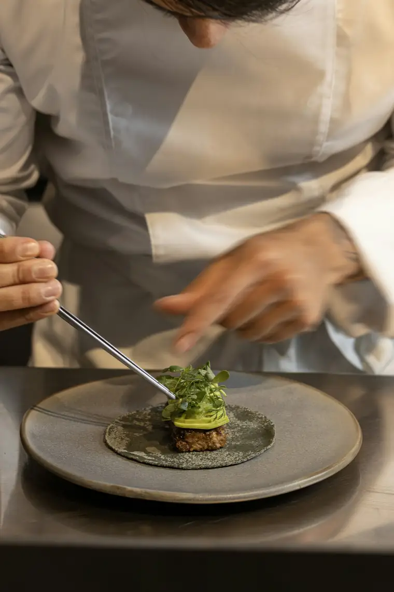
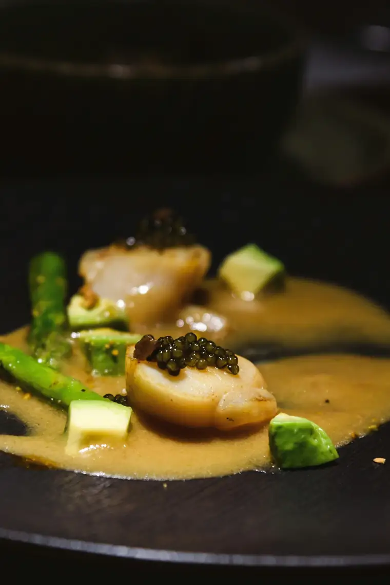
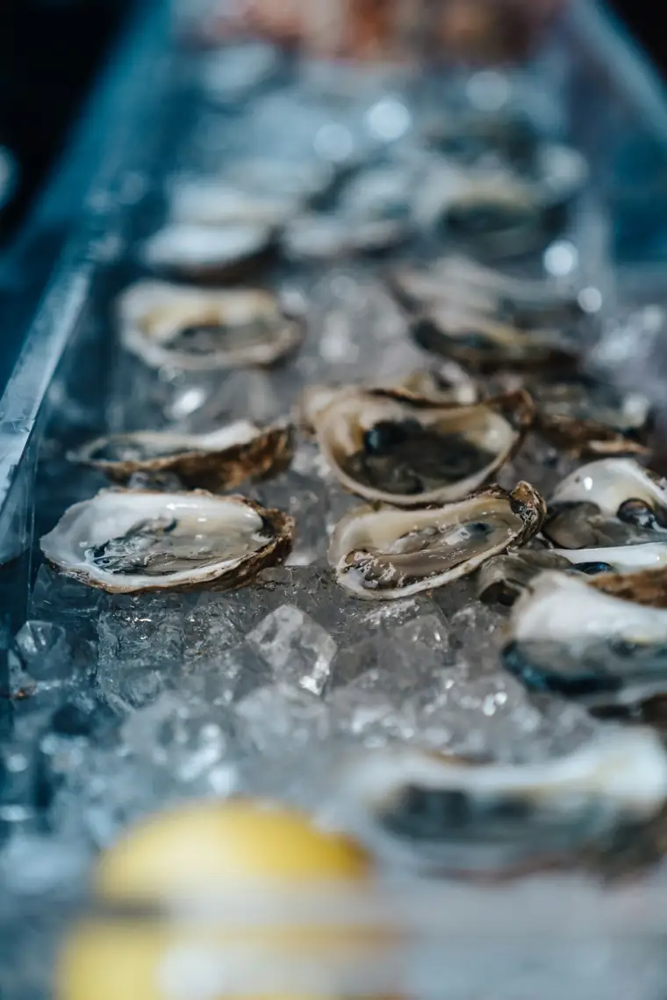
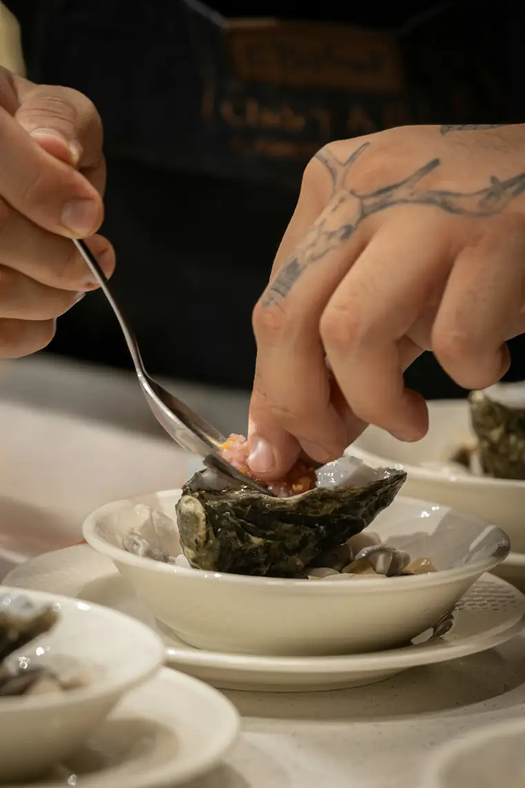
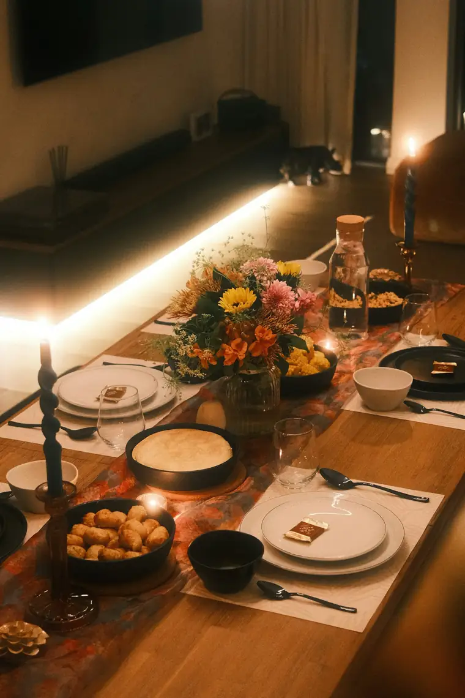
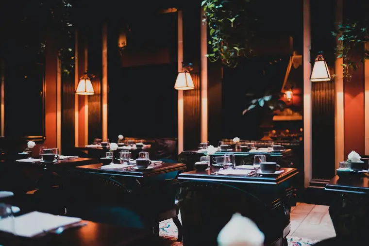

05:00
The dock
The Cortez boats come in before the sun. We buy from three fishing families at the dock, with nobody in between.
Gulf seafood · Sarasota, Florida
Twenty-two seats facing an open kitchen in the Rosemary District. The menu follows what the Cortez boats bring in, and it changes when the water does.
The house
We cook one menu a night, for twenty-two guests, from whatever the Gulf gives us that morning. If the boats stay in, the menu changes. That is the deal, and we think it is a good one.



From the dock to the pass
The Cortez boats come in before the sun. We buy from three fishing families at the dock, with nobody in between.
Fish is cured, dry-aged or left alone. The menu is written by hand at ten and printed at noon.

The oak is lit at four. Snapper roasts whole; lobster rests in brown butter until service.

Doors open. Every plate arrives with one sentence about where it came from, and nothing more.

Private dining
One long cypress table for twelve, behind a linen curtain. The kitchen writes a menu for your group alone, and the sommelier opens whatever you ask for.
Gallery
What guests say
“We came for an anniversary and stayed until they were stacking chairs. The scallop with caviar is the best thing I have eaten this year.”
“Every plate comes with one sentence about where it came from. It never feels like a lecture.”
“Ask for the counter. Watching the kitchen work is half the evening.”
“The sommelier found us a Galician white for under sixty dollars. I still think about it.”
Hours
Open today
| Wednesday & Thursday | 5:30 – 10 PM |
|---|---|
| Friday & Saturday | 5:30 – 11 PM |
| Sunday | 5 – 9 PM |
| Monday & Tuesday | Closed |
Reservations
Tables open 30 days ahead. For more than six guests, ask about the Pearl Room.
Rather call? (941) 555-0148